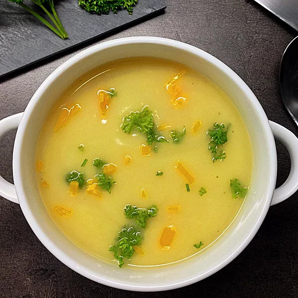

Potato Soup

Description
This is a creamy soup that is satisfying as a main dish, especially when accompanied by buttered sourdough toast.
Ingredients
- 8 cups water
- 6 large potatoes, peeled and sliced paper-thin
- 1 onion, chopped
- 4 stalks celery, chopped, with leaves
- salt and pepper to taste
- 4 cups half-and-half
- 2 tablespoons margarine
- 2 (11 ounce) cans condensed cream of Cheddar cheese soup
- In a large stock pot add water, potatoes, onion, celery and season with salt and pepper. Bring to a boil, cover and simmer until potatoes and vegetables are tender.
- Once tender, mash soup with a potato masher, and add butter and cream.
- Gradually bring mixture to a simmer. Add condensed cheese soup and blend. Serve while hot.
Return to home